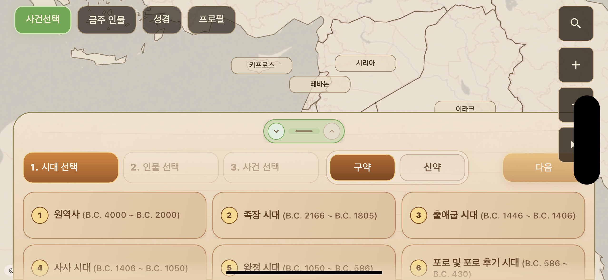
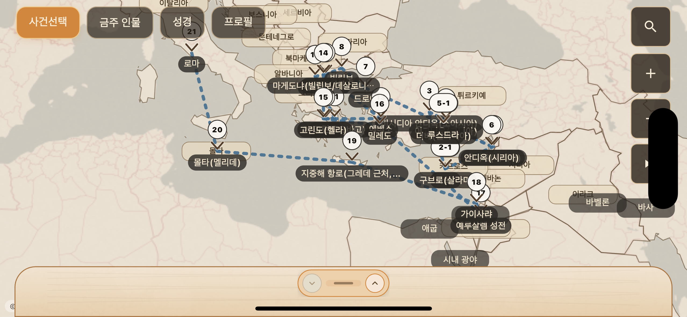
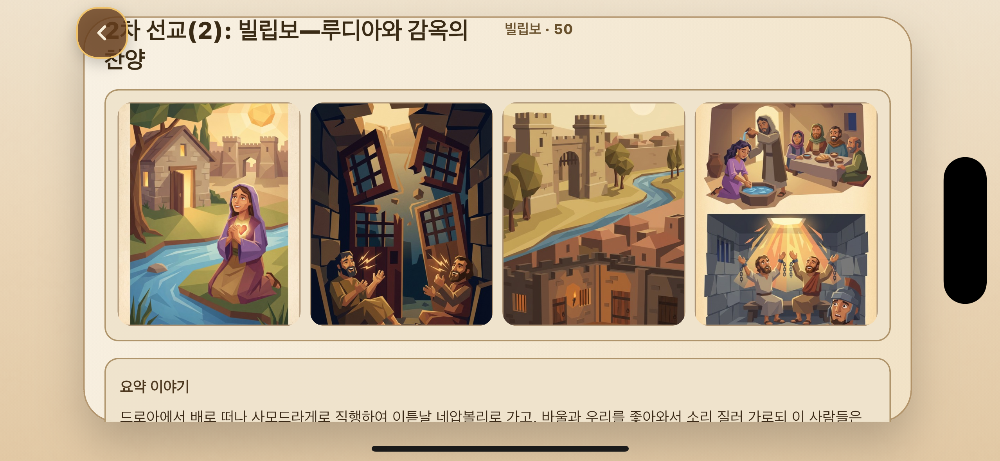
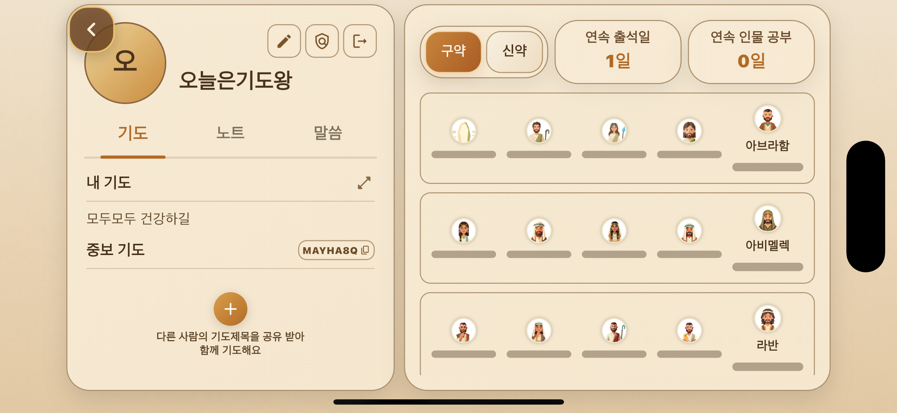

01
인물과 사건을 선택하세요
시대와 인물을 고르면 관련된 사건을 바로 이어서 살펴볼 수 있어, 성경 흐름을 끊기지 않고 따라갈 수 있습니다.

Story Bible
지도위에서 펼쳐지는 이야기
시간의 흐름 속에서 인물을 먼저 고르고, 지도에서 사건의 위치를 확인한 뒤, 요약 이야기와 실제 성경 구절을 함께 읽을 수 있어요.
성경을 장면 하나씩이 아니라 연결되는 흐름으로 이해하도록 돕는 앱입니다.

App Preview
인물 선택에서 시작해 지도, 사건 요약, 프로필 기록까지 이어지는 학습 여정을 한 번에 담았습니다.
01
시대와 인물을 고르면 관련된 사건을 바로 이어서 살펴볼 수 있어, 성경 흐름을 끊기지 않고 따라갈 수 있습니다.

02
주요 장소와 이동 경로를 지도 위에서 확인하며, 사건이 어디에서 어떻게 이어지는지 더 선명하게 이해할 수 있습니다.

03
장면 이미지와 짧은 설명, 실제 말씀을 함께 배치해 사건의 의미를 묵상하듯 따라갈 수 있도록 구성했습니다.

04
내 기록, 저장한 내용, 공부 진행 상태를 한곳에 모아두어 성경 인물 학습을 꾸준히 이어갈 수 있습니다.
